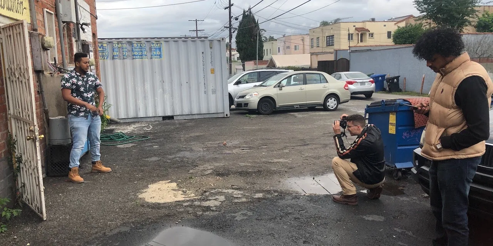

There are many ways one can write my biography. It can be written as a rags to (the path to) riches story, or as the story of a boy with nine lives, and many other interpretations. One of the other interpretations is as a tension between the private and the public. A central conflict in the story of my life has been around what I choose to share, with whom I share it, through what platform, and for what reason. Since I was a young boy, I have always loved to talk openly and freely about anything to anyone. By age 5, I was known in the family as Radio Botswana. At the time, my family knew never to say anything in my presence that they did not want repeated elsewhere. Of course, after the age of 5, I grew into a man who understood that it was not my place to tell other people's stories. But as far as my own stories have gone, for the most part, I have had no fear sharing them. It goes without saying that I did not always share them as truthfully as possible. Instead, I curated them based on several factors. As I strive to live more honestly with myself and the world around me, I find myself having to interrogate this tension between the private and the public.
The first significant example of me curating the story of my life came from 2005 and 2006 when I lived in Gaborone with my brother and his wife. I had begged them to let me move in with them after visiting them during my school holidays and discovering that not every member of my family lived in poverty. I cannot emphasize enough the contempt young me held for my family's socioeconomic background, especially after the death of my father. I remember I felt like I was born into the wrong family. I hoped that someday the police would come to my house and tell me that they had come to pick me up to correct a baby mix-up they discovered. I imagined my real family would be extraordinarily well-off, and I would have enough school shirts to last every day of the week without having to rewash my school uniform every other day. You can imagine how sad I felt each time someone said I resembled any of my family members. When I moved to the city, I lied to everyone at school and the kids in our neighborhood that my brother was my father. The 17 year age difference between my brother and I made it believable. It was already enough that I was from the village and did not exactly fit in. I did not want them to know I came from a no-income family too. It was a simple lie, but one that would prevent me from seeking the help I needed when life at my brother's proved worse than I would have liked. As I mentioned in my TED talk, the challenges I faced there were instrumental in the person I have become. But was the cost worth it?
Over the past decade of my life, I have learned a lot about myself. One of the things I have discovered is that I am an extroverted introvert. However, I have lived most of my life, pretending to be a complete extrovert. I built an identity around being the so-called "smartest kid in Kanye," whatever that meant. I grew up being teased by the boys in my village for hanging out with girls instead of doing boy things like play soccer or sit by the road catcalling girls as they passed by. I did not know it at the time, but I found refuge in my friendships with girls because my femininity was nearly as strong as my masculinity, if not more. So they enabled an environment where I could exist as I am. While I could not return their insults out of fear that they would beat me up - and they could - I took great pleasure in outperforming them in my academics. I signed up for Debate, Maths and Science Club, and represented my school at subject fairs to flex my intellectual muscle. My teachers loved me, and so I was always under the spotlight. Each week that I was celebrated at the school assembly, it was irrelevant whether my family was poor or I was man enough. For as long as everyone was talking about my achievements, I could breathe. It is from this that I developed the habit of sharing my successes.
My family - like any Kanye family would - did not approve of this habit of broadcasting my achievements. They saw it as an invitation for the wrath of those who might be jealous. But how could I stop when there was a growing number of students who looked up to me? Yes, I am a rebel in a lot of ways, but this was not one of them. Coming from a place that is known for its witchcraft, it would be naïve of me to claim that I was never scared of the possibility of being bewitched. After all, it would not be the first time, according to family legend. But the idea of inspiring others to dream that a nobody like me from a written-off school like Seepapitso Senior can go from the then dusty streets of Kanye to the valleys of Costa Rica to attend a prestigious school like the United World College propelled me to keep sharing my moves with everyone. I know of at least four people who have been inspired by my story, who have persisted in the pursuit of their dreams, and I know without a doubt that they will continue to make this world of ours just a tiny bit better. My rationale was if eventually the herbs of the few who might be jealous overpower the divine protections of all that I find holy, I can rest in peace knowing that my light has ignited the light in others. How else would I have accomplished that if I kept my wins and losses private?
It was not until Stanford that the tension between the private and the public became pronounced. If my family thought I shared too much, you could imagine how worse my sharing appeared on this side. My impression of the culture here in the Silicon Valley is that people do not share any and everything. With words like networking and personal-brand being used on a daily, people curate digital platforms that highlight and showcase their best sides. In some sense, we all do that. On another extreme, I have always perceived the culture back home to be a sharing culture. You only need to ride in a combi - especially in a village such as where I grew up - to know that people do not think twice before disclosing their frustrations at their partner's side partner to total strangers. It is somewhat cathartic - to be able to release those thoughts to strangers, you hope never to meet again. Although in reality you will meet them again, chances are they will not bring it up. It was after getting here that I started to question the content I put out into the world. In part, because Stanford also gave me the vocabulary and frameworks to critically examine my behaviors. I realized that I have walked around the world all my life with a strong belief that I was a good person, and almost all my actions were proper. But the truth was more complicated than that and was part of the motivation for leaving mainstream social media in 2018. If I was not as good as I thought, with what authority could I continue inspiring others from backgrounds such as mine that they too could live their wildest dreams?
In 2018 I was awakened to the truth that while my femininity was more nourished than in the average male, my masculinity was still as toxic. I am proud to say that since then, I have been successful in identifying most of the toxic traits and their sources, and that is the first step to detoxifying my masculinity. It is still a long way to go until near-full detoxification, but thanks in part to the patience and courage of my friends, I know I will get there. But will I wait until then before returning to sharing my wins and losses with the world again? Am I even listening to myself? The four people I know to have inspired were inspired because they had access to my journey. They know that before getting scholarships to UWC Costa Rica and Stanford, I failed to get the Top Achievers Scholarship from the Botswana Government, and every other scholarship I applied for. So when they faced the mountain of rejection that they did - and I had it easy compared to some of them - they knew it was still possible to win even after so many losses, so they continued. It is this idea that moves me to continue sharing the ups and downs of my journey. If I have learned anything over the past decade, it is that humans are complicated. As I continue to navigate my shadows, I realize that as bad as my time in Gaborone was, my brother and sister-in-law were also doing the best they could. As hurtful as the abuse from the boys I grew up with was, they too thought they were good people, and their actions were right.
If, in sharing my story, I inspire one more person to pause and interrogate the impact of their actions on those around them, then this would be a win. The win - I think - is not necessarily in the change of the behavior itself, but just in the active reflection about the act. After all, the new behavior might itself be worse than the previous one. Perhaps what has become the highest upside from all the public sharing I do, is the accountability network it has produced. I have published a lot of content around the aspirations I have for the kind of person I want to be, and it is easy to spot whenever I do something inconsistent with those. Coming from a communal culture, I need that public accountability. I am also fortunate to have friends who are courageous to call me out when I do or write problematic things. If all things were private, then how would they know all the ways I need to be put in check? I want to conclude by saying while I seem to imply where I come from we share things publicly, also remember that we believe kgomo ga e nke e nnyela boloko jotlhe (Translation: A cow never releases all of its dung).
← Return to Blog